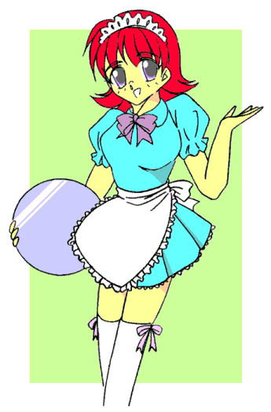

ランプリーレディを打ち破った日の夜、光雄は夢を見ていた――
夢の中で、スウィートハニィと怪人が剣を交えて戦っている。
……何だあの怪人は？ 俺、あんな奴と戦ったっけ？
見覚えの無い怪人とスウィートハニィの戦いを見つめ続ける光雄。
どうもスウィートハニィは怪人に押されているようだ。その動きには余裕がなく、焦りさえ感じられる。
渾身の一突きさえも、怪人の輝く剣にあっさりと弾き飛ばされてしまう。
……あっ！
くるくると回転しながら空中に舞い上るサーベル。そしてその剣先は、呆然と立ちすくむハニィの胸を刺し貫いた――
ええっ！？ ハニィが敗れた？ どういうことだ？
（如月先生、あれはあなたではありません）
その声はあの時の……君はだれだ？
（あたしはスウィートハニィ）
……ええっ！？
戦え！スウィートハニィ
第３話「レディ・アイの誘惑」
作：ｔｏｓｈｉ９
ランプリーレディがスウィートハニィに敗れた、三日後――
人知れぬとある場所で、その戦いの報告がなされていた。
「シャドウレディ、何故すぐに報告せん」
「申し訳ありません。ランプリーレディが何故敗れたのか、その分析に手間取りまして」
「ばかもの！ 成功したにせよ失敗したにせよ、すぐに私に報告するのが幹部の務めであろう」
「す、すみません」
「クロウレディからはすぐに報告があったぞ」
（ちっ、あのお調子者め……）
「何か言うたか」
「い、いえ」
「それで指輪の奪取、今後どのように図るつもりだ」
「はっ！ ランプリーレディの尊い犠牲により、指輪を嵌めスウィートハニィに変身していたのは、やはり桜井幸だとわかりました。彼女にターゲットを絞り、指輪の奪取を図るつもりです」
「間違いなかろうな」
「はっ！ 確実です」
胸を張って答えるシャドウレディだが……
「もう失敗は許されんぞ。どのようにするつもりだ」
「今回はこやつに実行させます」
『レディ・アイです。シスター、必ずや指輪を奪取してご覧に入れます』
「レディ・アイ、期待しておるぞ。見事指輪を奪取して見せよ」
「ははっ！」
その日、南高校の保険医・宮下愛子は、保健室のドアの向こうでくーん、くーんと鳴いている犬の鳴き声に気がついた。
「ええ？ 校内で犬の鳴き声なんて、どこから迷い込んだのかしら？」
彼女がドアを開けると、廊下には一匹の子犬がちょこんと座り込んでいた。保健室に向かって鳴いている。
「く〜ん、く〜ん」
「こらこら、君、こんなところにどうしたの？」
愛子はその子犬をひょいと持ち上げて話しかけた。
子犬はちょっと小首をかしげ、じっと愛子を見詰めている。
「か〜わいい〜っ」
その仕草と彼女を見つめる大きな黒い瞳に、愛子は思わず見惚れてしまった。
じっとその瞳を見つめていると、その黒い瞳がまるで段々大きくなってきて、愛子はまるでその中に吸い込まれてしまうような錯覚に陥る。
いや、それは錯覚ではなかった。……そう、その時子犬の瞳は本当に大きくなっていたのだ。
やがて愛子の動きが止まる。
（あれ？ どうしたの？ 体が動かない！？）
すると何ということであろうか。大きくなった子犬の二つの黒い瞳はズボリと飛び出してきた。
二つの瞳は周囲の様子を伺うかのように、ふわふわと空中にしばらく浮かんでいたが、やがて狙いを定めたかのように愛子に向かってゆっくりと寄ってきた。
（イヤっ！！ なによコレ！？）
思わず目を瞑った愛子だったが、空中に浮かんでいた目玉は瞼から彼女の中にずぶずぶと入り込んでいった。
愛子は目玉が入り込んだ瞬間びくっと体を震わせたが、やがて静かに目を開いた。
その目は今までの愛子の瞳に比べて、黒目勝ちな愛らしいものになっている。
「ふふふ……しばらくこの体借りるわよ」
愛子はにやっと笑った。
見つめられると誰もが惹きつけられてしまう、その瞳をきらきらと輝かせながら。
次の日、南高校の制服は合服から夏服に変わった。
もう梅雨明けも近い。男子生徒も女子生徒も半袖の涼しげな制服で登校してきている。
「先生、お早うございます」
「おはよう」
「如月先生、おはようございま〜す」
「お……おう、桜井おはよう」
「先生、最近あたしの事を避けてません？」
「い、いや、そんなことはないぞ」
「あたしはこんなに先生のことを好きなのに……先生、あたし先生にもっとあたしのこと見て欲しいんだ。……ということでぇ」
「ということで？」
「ねえ先生、今度一緒にプールに行きません？」
「プール！？（……あ、あれか）」
光雄は幸の友人、栗田宏美に変身して、ビキニを身に付けた時のことを思い出していた。
「うん、プールのチケットをもらったんだけれど、先生と一緒に行きたいなぁって」
「委員長の相沢と一緒に行ったらどうだい？」
「駄目。委員長って真面目すぎて、一緒にいても面白くないんだもん」
「俺は違うのか？」
「先生は特別。……それに、断ったらキスされたことを言いふらしちゃうぞ」
幸は、えへっとはにかみながらそう言い返してきた。
「おいおい、脅すなよ。あれは事故だろう。……うーん、仕方ない、わかったよ」
「やったぁ！ じゃあ週末の日曜日に……きっとですよっ！」
最近幸の姿になることが多い光雄……しかも教育一筋だった今までと周りの状況はがらりと変わってきている。
（『虎の爪』の怪人たちは、どうも幸を指輪の持ち主と勘違いしている節があるんだよなあ。まあ俺も悪いんだが……いずれにしても、あいつらの誤解を解かないと、このままではずっと桜井を危険に晒すことになるしな）
そんなことをつらつらと考えた末の決断だった。
その時、背後から幸を呼び掛ける声がした。
「桜井さん」
「はいぃ？ ……ああ宮下先生、何ですか？」
「桜井さん、昼休みにちょっと保健室に来てくれない？」
「はぁ。どうしたんですか？」
「午後の授業の前に、教室に持って行ってもらいたいプリントがあるの」
「そうですか。わかりました」
（あの人……）
「え？」
（先生、あの女の人には『虎の爪』の怪人が取り憑いてます）
「何だって！？」
「……先生、どうしたんですか？」
「あ、い、いや何でもない。……桜井、じゃあまたな」
「じゃあ先生、日曜日はよろしくねっ」
手を振りながら駆けていく幸の背中を、光雄はじっと見送った。
さて……
そして昼休み。桜井幸は保健室の前に立っていた。
「宮下先生、桜井です」
「ああ、入って」
愛子に促されて、幸は保健室に入るとぺこりとお辞儀した。
「どれを持って行けばいいんですか？」
「これよ」
愛子は机に置いたプリントの束を持つと、ゆっくり自分の顔の前に差し上げる。つられてその動きを追う幸。だが次の瞬間、愛子はプリントの束をぱっと降ろした。
彼女の黒目勝ちな瞳と、幸の視線が合ってしまう。
「……あ！」
次の瞬間、幸は愛子の瞳を見つめたまま目が離せなくなった。
「さあ、桜井さん、もっとこっちにいらっしゃい」
「……はい」
「先生と今からいいことしましょう」
「……はい、先生」
「じゃあ服を脱いで」
「……はい、わかりました」
夢遊病のようにうつろになった視線を彷徨わせ、愛子の言葉に答える幸。
そしてしゅるしゅるっと胸のリボンを外すと、セーラー服の上着を脱いだ。
幸の白い清楚なブラジャーに包まれた胸が、愛子の目の前に晒される。
「ほら、スカートも脱ぎましょうね」
「……はい。スカートも脱ぎます」
幸がスカートのホックを外すと、ふぁさっとスカートが床に落ちた。
幸はブラジャーとショーツ、それに紺のハイソックスだけの姿になっていた。
相変わらずその表情は、ぼーっとしたままだ。
「さあ、ベッドに横になりなさい」
「……はい」
幸は愛子に言われた通り保健室のベッドに向かってゆっくりと歩いていくと、その上で横になった。
仰向けになり、両手をお腹の上に揃えてじっとしている。
「ふふふ……っ」
愛子も白衣、ブラウス、スカート、パンティストッキングと脱ぎ捨てて下着だけの姿になると、幸に寄り添うように寝そべった。
「桜井さん、かわいいわよ」
「うっ」
愛子の指が幸のショーツの上をさっと撫でると、幸はぴくっと体を振るわせる。
ゆっくりとショーツの上から幸の下腹を撫でていた彼女の指は、やがて少しずつその中に滑り込んでいった。
「くっ、う、うーん」
「ふふっ、さあ、あたしの虜になりなさい……」
妖しげな表情で自分の唇を幸のふっくらした唇に近づけていく愛子。幸は何時の間にか目をじっと閉じている。
「さあ桜井さん、目をお開けなさい」
その声に答えるように幸がゆっくりと瞼を開く。しかしその瞳はさっきまでと違い、強い意志の光を湛えていた。
「……え？」
幸はにやっと笑うとベッドから跳ね起きた。突き飛ばされて床に尻餅を付き、狼狽する愛子。
「私の力が効いてない……？」
「ふんっ、お前の力なんかお見通しよ」
「な、何故だ？」
「お前の眼力に惹きこまれないように、わざとすぐに術にかかった振りをしたの。目の焦点をぼーっとぼかして、あなたの目を見ないようにしてね」
「……器用だな」
お気づきであろう。彼女は、勿論本物の桜井幸ではない。
謎の声＝初代スウィートハニィに「愛子には『虎の爪』の怪人が取り憑いている」と指摘された光雄は、幸にプリントを取りに行くのは不要と伝え、その後彼女に変身して、代わりに保健室に来たのである。
光雄ははっきりと『虎の爪』と戦う決意を固めていた。
話はランプリーレディとの戦いに勝利した夜、夢の中での出来事に遡る。
（あたしは『虎の爪』とずっと戦ってきた。指輪を守るため、家族を救うため、そしてあいつらの野望を打ち砕くために）
「でも、その君は今どこにいるんだ？ どこから俺に語りかけてる？」
（あたしは実はもうこの世にはいないの。さっき先生が見たように、あたしはあいつに敗れてしまった。指輪は何とか『虎の爪』に奪われずに雑貨屋の店主に託したけれど、彼はその指輪をあなたに売った。……勿論彼も『虎の爪』のことを知っているけれど、きっとあなただったら指輪を渡しても大丈夫だと思ったのね。生徒のことを思いやる、純粋な心の持ち主のあなたなら――）
「…………」
（今あなたに話しかけている“あたし”は、指輪の中に残された残留思念なの。指輪の新しい持ち主が、もしあたしの意志を引き継いでくれるような人だったら、その人を助けて『虎の爪』と戦えるようにするために、最後にあたしの念を残したの）
「まさか初めて変身した時に、自然に女言葉が使えたのは……」
（あたしが無意識に使えるようにしたの）
「じゃあ、いきなりスウィートハニィの姿や名前が思い浮かんだのは……」
（あたしが先生にイメージを送った）
「それじゃあ、あいつらと戦おうって思っているこの気持ちは、俺の意志じゃないのか？ 君がそう仕向けているのか？」
（違う！ それは先生の素直な気持ち……先生にその気持ちがあったから、あたしはこれまで先生を手助けできた。あいつらは、この世界を支配するために、まだまだ指輪を狙ってくる。この指輪にはそれだけの力が秘められているの）
「じゃあ、これからもあいつらが俺を襲ってくると……」
（そうね、必ず。シャドウレディは『虎の爪』の幹部の一人だけれど、それ以外の戦った怪人は、はっきり言ってザコよ。……これからまだまだ強力な怪人が現れる）
「君が敗れたような……か……」
（お願い！ 先生、この指輪を守って！）
「それって、俺にあの怪人どもと、これからも戦えってことか？」
（無理なお願いだってことはわかってる。でも先生ならきっとわかってくれるって思うの）
「おだてるなよ。でも――」
（あいつら、指輪の存在をキャッチして動きが活発になっている。これからいったい何を始めるのか……）
「そうだな。それにあんなやつらがこの世にいるなんて、確かに許せんな」
（先生、それじゃあ……）
「わかったよ。戦ってみよう」
（ありがとうございます！）
幸に変身していたハニィは、指に嵌めている指輪を胸に当てて叫んだ。
『みつお・フラァッッシュ！』
幸の体が光に包まれる。
セーラー服が粉々に飛び散り、一瞬何も身につけない裸の状態になってしまう。
そして空気が再び幸の周りにまとわり付き始め、別の姿に変化し始めた。
上半身は胸の大きく開いた滑らかで真っ赤なノンスリーブシャツ、下半身は黒のタイツに包み込まれ、それは腰のところでジャンプスーツのように一つにくっついていった。踵がくっと持ち上がり、両足は白いブーツに包まれる。と同時に髪が短くなりながら赤く染まり、跳ね上がっていった。胸とお尻は一段と大きく張り出し、細い腰はさらに絞れていく。
薄い生地のジャンプスーツは今の光雄の日本人離れした見事なボディラインをくっきりと描き出していた。そしてブーツと同じ白い色の手袋に包まれた右手には細身のサーベルが握られていた。
「宮下先生に取り憑くなんて、世間の目は誤魔化せても、このあたしの目は誤魔化せないわよ」
「ふん、ばれては仕方が無い。しかし何故わかった」
「ふふっ、そんなことあなたに言う必要ないわね」
「あたしの虜にして、大人しく指輪を渡してもらおうと思ったが」
「あなたも『虎の爪』の一味？」
「そうよ、あたしは『虎の爪』のレディ・アイ」
「レディ・アイ、またあたしからこの指輪を奪おうって言うの？ そんなの百年、いえ千年早いわよ。取れるもんなら取って御覧なさい」
「お前、何者だ」
「ある時は高校教師、またある時は女子高生……しかしてその実体は、愛と正義の戦士、スウィートハニィ！！（……うーん、段々この口上にも慣れてきたな）」
「何をっ！ 今度こそあたしの虜になってもらうわよっ」
愛子の眼がくわっと見開かれる。きらりと光るその瞳。
「おっと」
（先生、あの目を見ちゃ駄目よ）
「わかっているさ。……かといって、このままじゃ」
何とか愛子の目を見ないように体をくるくると回転させて避けるハニィ。しかし、徐々に医務室の隅へと追い詰められてしまう。
「さあ、もう逃げ場はないよ」
（どうする……？）
愛子の視線を避けながら考えるハニィ。……ふと何かをひらめき、指輪を胸に当てて叫んだ。
『みつお・フラァッッシュ！』
スウィートハニィの体が光に包まれる。
そしてその中から現れたのは……
「いらっしゃいませっ♪ お客さまは何名様ですかっ？」

（続く）
レディ・アイ
本体は二つの目。黒目勝ちのその目に見詰められると、誰でもその虜になってしまう。
何せ目玉なので、動物や人間に取り憑いて活動する。また、自分で自分を見ると、力が相殺され術が破れる。
スウィートハニィを自分の虜にしようとしたが、銀のトレイを鏡代わりに使ったスウィートハニィの攻撃の前にあえなく敗れる。
□ 感想はこちらに □